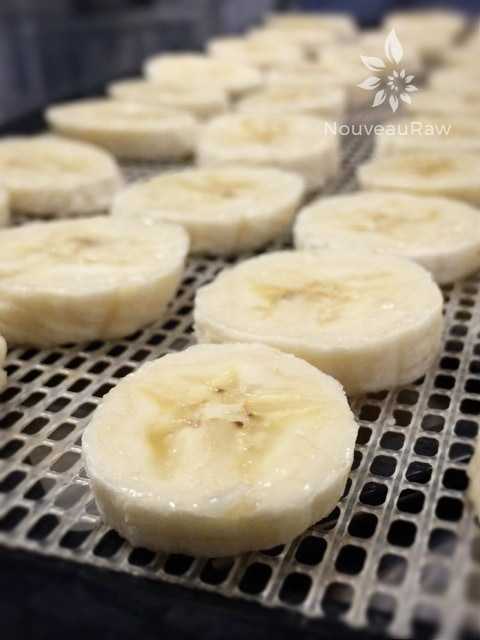
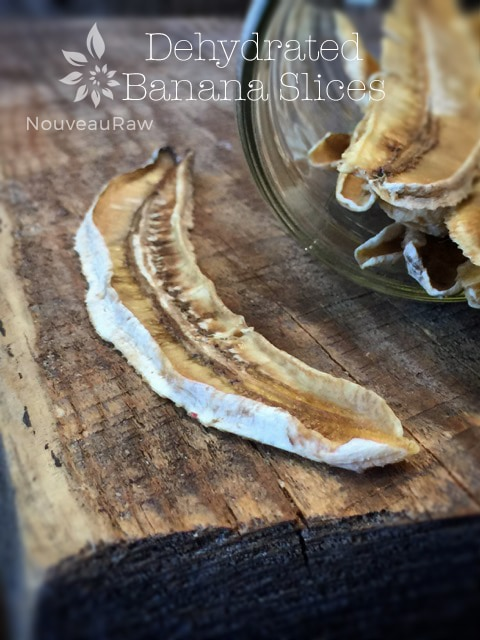
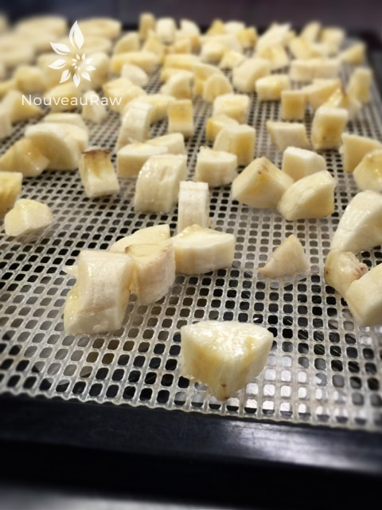
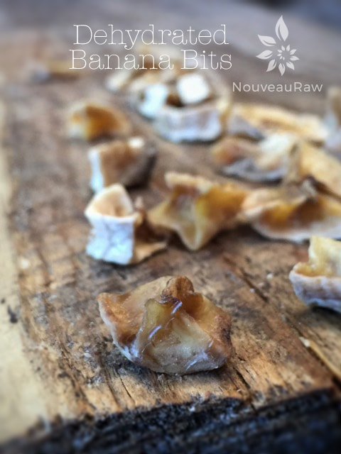

Dehydrated Bananas

~ raw, dehydrated ~
I know this may be a silly posting but none-the-less, I am going for it! :) A few days ago while I was roaming the produce department at the grocery store, I spotted the produce man boxing up bananas.
I asked him if he was going to mark them down because they were so ripe. He said yes and asked if I was interested in some. He sold them to me for 29 cents a pound rather than they normal 89 cents a pound. He didn’t have to ask me twice.
Never be afraid to ask the produce workers if they have any overly ripe bananas that are being marked down. Even if you don’t see them on the sales floor. I do this every time I visit the grocery and have gotten some great deals.
Once I got home with them, I knew I needed to get them in the dehydrator right away since they were so ripe and I didn’t want an invasion of fruit flies. So, to break up the monotonous job of slicing up banana chips, I got creative (well sort-of) so I thought I would share…
Oh, one quick thing about dehydrating bananas… Make sure you dry ripe bananas. The skins ought to be freckled with brown spots, not to be confused with bruises. If the banana flesh as bruises on it cut those out before slicing. Not only are ripe bananas sweeter in flavor, they are easier to digest.
As I mentioned, use ripe bananas with brown freckles, don’t buy bananas that have a lot of black markings. Those are not “ripe” markings, nor are they bruises, it is usually an indicator that the bananas got too cold or were even close to being frozen. I have made this mistake before and bought them thinking they were ripe, instead they had mushy, slimy insides. When it comes to dehydrating, cut your bananas into the similar thicknesses so they all dry in the same time frame. Also, place the fresh banana pieces on the mesh sheet that comes with the dehydrator. This will allow the air to flow all around them, thus speeding up the dry time.
You are the one who controls the length of time that they need to spend in the dehydrator. I like mine soft and chewy so they stay in for about 16 hours. Bob likes them crispier so they might stay in for 24 hours or even longer, depending on how thick or thin I cut them. Dry them at 115 degrees (F).
We have all seen banana chips…

You might have even seen dehydrated bananas done this way…
Slice the banana lengthwise about 1/4″ thick.


But have you seen banana bits?
Slice the banana lengthwise into 4’s, then dice.


I had never dehydrated bananas cut into small cubes. But I thought they would be great to use in granolas, top your favorite cereal with them or tossed into a trail mix. Now, I know what you are thinking… Amie Sue, why would I do this when I can just throw in the normal dried banana chips? I know, I know, I normally do just that but so often I find banana chips to be just too big to scoop up with a spoonful of granola cereal or yogurt, thus, banana bits were born! This will allow for better dispersion of flavors in each bite. See what I am saying here? :) Thank you for entertaining me by reading this. hehe Blessings.
© AmieSue.com